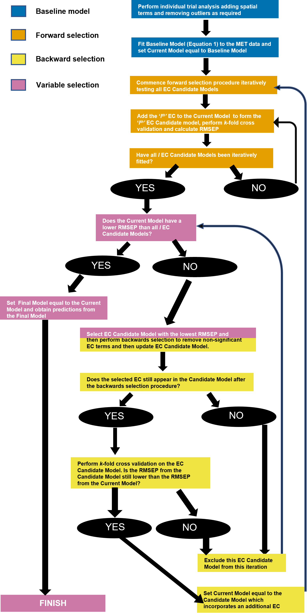
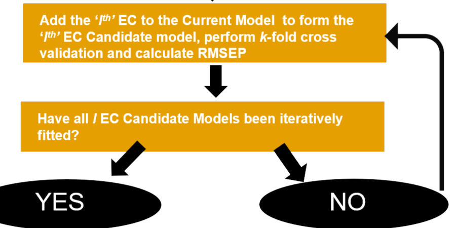
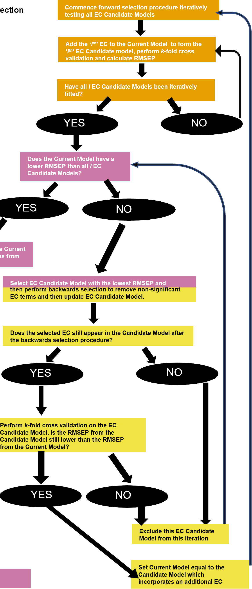

ecreml R-Package Guide
Introduction
The ecreml R-package consists of a series of functions to aid agricultural scientists and data analysts implement the statistical methodology described in Mumford et al. (2023), which incorporates environmental covariates (ECs) into a multi-environment trial (MET) analysis to better understand the environmental drivers contributing to the genotype \(\times\) environment \(\times\) management practice (G\(\times\)E\(\times\)M) interaction. The overall aim of the ecreml R-package is to make it as easy as possible for scientists to implement the statistical methodology for their own MET data. This vignette is focused on guiding the user through the core functionality of the ecreml R-package. Users can automate the entirety of the algorithm, or explore components of the methodology through individual functions.
Despite the focus being to make the methodology as easy to implement, the ecreml R-package does require scientists to have a strong understanding of linear mixed models. This is because the identification of ECs is an incredibly complex statistical challenge. Additionally, it poses practical challenges too, as the robust identification of ECs requires a large number of field trials (a financially expensive task!) in order to begin to make valid inference on EC effects across a target population of environments. Thus, in order to minimise the number of trials (i.e. environments) required for valid inference, it is necessary to use state-of-the-art statistical methods to correctly partition EC effects from noise/variability, as well as partitioning EC effects from other potential factors such as genotype (G) or management practice (M) effects. This is achieved by the user providing a correctly specified ‘baseline’ model in the form of a linear mixed model fitted using asreml. The detection of important ECs is then performed by the ecreml R-package.
ASReml Installation
The ecreml R-package will also require users to be proficient in using the asreml R-package, which requires a commercial software license from VSNi. Note that you will need the latest version of the asreml R-package installed (\(\ge 4.2.0.372\)), in order for the ecreml package to function correctly.
The subset selection algorithm to identify important ECs can be summarised in the flow chart below, which is taken from Figure 1 of Mumford et al. (2023). The proposed methodology can be thought of as being somewhat analogous to a genome-wide association study (GWAS) which attempts to better explain the genetic (G) component of the G\(\times\)E\(\times\)M interaction using genotypic covariates such as markers or quantitative trait loci (QTLs). The difference being that instead of the G component, we are attempting to explain the environment (E) component through EC data.
Baseline model
Before ECs are incorporated into the model via the ecreml R-package, it is important that the correct baseline model is fitted. The baseline model can be simply thought of as the model that captures G, E and M effects without the inclusion of ECs. Therefore, the E term in the baseline model can be interpreted as collectively capturing the effect of all important ECs.
Throughout this vignette, we are going to use the motivating sorghum agronomy data set described in Mumford et al. (2023) which is included in the ecreml R-package.
# Load required R packages
library(asreml)
library(ecreml)
library(foreach)
library(rlang)
data(SorghumYield)The key things to note about the motivating data set are:
- 6 trials \(\times\) 2-3 times of sowing (TOS) \(\times\) 4 target plant populations
- Each trial has either a split-plot or split-split-plot design
- Environment is the combination of trial and TOS (total 17 environments)
- Response variable of interest is total grain yield (t/ha)
The baseline model for this data set fitted using asreml is:
baseline_asr <- asreml(
fixed = Yld ~ Genotype + TargetPop + Genotype:TargetPop,
random =~ at(Trial):Rep + at(Trial):MainPlot +
at(Trial,c('Breeza 1', 'Breeza 2', 'Emerald', 'Moree')):SubPlot +
Trial + Trial:Genotype + Trial:Genotype:TargetPop +
Env + Env:Genotype + Env:Genotype:TargetPop,
residual=~ dsum(~units|Env),
data = SorghumYield)
Technical details - baseline model
It is assumed that the scientist using the ecreml package is proficient with asreml and linear mixed models and can thus can understand why each of the terms in the baseline model above are necessary. Some key things to note:
- the
dsum(~units|Env)term fits a unique residual variance to each environment (i.e. trial \(\times\) TOS combination). - The terms
RepandMainPlotare the experimental design terms related to the split-plot design. - The term
SubPlotis also a design term, but is only required for trials which had a split-split plot design. Theat()function withinasremlenables us to explicitly state which environments theSubPlotvariance component should be estimated for. - To ensure
asremlcan correctly determine the experimental design for each trial, the E component is partitioned into a trial (i.eTrial) and TOS within trialEnvcomponent.- This would not be necessary if each trial consisted of a single TOS.
- G and M, and G\(\times\)M are fitted as
fixedeffects. - The terms corresponding to E, G\(\times\)E, E\(\times\)M, and G\(\times\)E\(\times\)M are fitted as
randomeffects.
For demonstrative purposes, the baseline model described above is different to the baseline model fitted in Mumford et al. (2023) in two key ways:
- The M component
TargetPopis target plant density instead of established plant density, and is fitted as a categorical variable. - Additional terms to account for spatial field trend have been omitted.
It is important that any additional terms that capture unexplained field variability are also included in the baseline model to ensure that treatment effects can be disentangled from spatial field variability. Otherwise the identified important ECs could be confounded with spatial field trend.
ASReml Notes
For more details on how to use asreml specifically, see the asreml reference manual (The VSNi Team, 2025). For more details on included additional terms into asreml to adjust for spatial field trends, see Gilmour, Cullis and Verbyla (1997).
ec_single
The ec_single() function takes the baseline model as the input, as well as a single EC to include in the model, in order to perform \(k\)-fold cross validation procedure described in Mumford et al. (2023). The output of the ec_single() function is the root mean square error of prediction (RMSEP), which provides an indication of how well the candidate EC predicts performance in an ‘untested’ or future environment. In the flow chart described in Figure 1, the ec_single() function implements the part of the algorithm outlined in Figure 2.
ec_single() function implements within the ecreml R-package.
In additional to ec_single() requiring the baseline model (.fm) and EC (.ec) as inputs, it is also necessary to provide the .G, .E and .M options so that ecreml can correctly identify which terms in the baseline asreml model correspond to G, E, and M respectively. Currently this input needs to be provided as an R expression which is admittedly cumbersome. This will be fixed in a future version of the ecreml package.
Suppose we want to explore the predictive performance of the model if we were to include the EC pre-flowering plant available water (PrePAW) into the baseline model for the sorghum data described previously.
data(SorghumCvGroup)
prePAW_rmsep_asr <- ec_single(.fm=baseline_asr, .ec=expr(PrePAW), .G =expr(Genotype), .E = expr(Env),
.M = expr(TargetPop), .trial= expr(Trial), .env_cv_df=SorghumCvGroup)The ec_single() function does a number of things underneath the hood. First, it updates the baseline model to include fixed effect terms for the EC main effect, as well as the G\(\times\)EC, EC\(\times\)M, and G\(\times\)EC\(\times\)M interaction effects. If the EC is a continuous variable, this will correspond to a linear regression involving the EC. If the EC is continuous, the ec_single() function will also include a random effect spline term denoted spl(EC). This spline term enables us to capture any non-linear trait (i.e. yield in the sorghum data) response to the EC being included in the model (Verbyla et al., 1999).
Technical notes - smoothing splines
The implementation of spl() terms within asreml is commonly referred to as the linear mixed model representation of the natural cubic smoothing spline Verbyla et al. (1999). For more details on the implementation of natural cubic smoothing splines in asreml, the reader is recommended to review Verbyla et al. (1999), Verbyla et al. (2018), Green and Silverman (1993), and Chapter 11 of Fitzmaurice et al. (2008). In practice, it is important to be aware that the specific implementation of cubic smoothing splines in asreml means that a continuous EC can be partitioned into a linear component (EC) and a non-linear component (spl(EC)). Moreover, there is a linear and non-linear EC component for all main and interaction effects. For example, the G\(\times\)EC interaction effect can be partitioned into a linear G\(\times\)EC component in the asreml model, denoted G:EC and a non-linear component denoted G:spl(EC).
Another thing to be aware of is that fitting the splines with too few knot points can result in under-smoothing of the non-linear EC effects. The default number of knot points in ecreml is 10 and can be modified in most ecreml functions by modifying the kn input. When in doubt, we would always recommend having too many knot points rather than too few knot points. We would never recommend fitting a spl() with less than 6 knot points in ecreml. Finally, the use of smoothing splines assumes that the trait (e.g. yield) response to an EC is smooth. When the trait response to a particular EC is not expected to be smooth biologically, then we do not recommend using ecreml to capture the non-linear response to that particular EC. For a more general introduction to smoothing splines, readers are recommended to review Wood (2017).
A useful utility function included in ecreml is the ec_full_model_constructor() function. This function takes the baseline (or current) model and reruns asreml with the included EC, including all linear and non-linear terms for that particular EC.
prePAW_full_asr <- ec_full_model_constructor(.fm=baseline_asr, .ec=rlang::expr(PrePAW), .G=rlang::expr(Genotype), .M=rlang::expr(TargetPop))The exact terms included in the updated asreml model can be identified by running $call on the asreml model object.
prePAW_full_asr$call
#> asreml::asreml(fixed = Yld ~ Genotype + TargetPop + Genotype:TargetPop +
#> PrePAW + TargetPop:PrePAW + PrePAW:Genotype + TargetPop:PrePAW:Genotype,
#> random = ~at(Trial):Rep + at(Trial):MainPlot + at(Trial,
#> c("Breeza 1", "Breeza 2", "Emerald", "Moree")):SubPlot +
#> Trial + Trial:Genotype + Trial:Genotype:TargetPop + Env +
#> Env:Genotype + Env:Genotype:TargetPop + spl(PrePAW, k = 10) +
#> TargetPop:spl(PrePAW, k = 10) + spl(PrePAW, k = 10):Genotype +
#> TargetPop:spl(PrePAW, k = 10):Genotype, residual = ~dsum(~units |
#> Env), na.action = asreml::na.method(x = "include"), data = .df,
#> aom = T, maxit = 300)Note that the number of knot points for the spline terms in the model in asreml is set to k=10 by default. This can be set within the ecreml R-Package using the .kn input. Reducing the number of knot points in the spline terms will increase the computational speed but reduce the accuracy in capturing the non-linear EC response. The default .kn=10 has been chosen as a balance between these two competing interests. It is not recommended to set the number of knot points any lower than .kn=6 for any spl() terms in the model.
After running ec_single(), the function fits the full asreml model for a single EC. It then performs \(k\)-fold cross-validation underneath the hood such that the groupings of environments to folds/groups/clusters can be pre-specified in the ec_single() input data frame .env_cv_df. The name for the column specifying the groups needs to called $cv_group. For the motivating data, this is specified in the data frame SorghumCvGroup.
SorghumCvGroup
#> Env Trial cv_group
#> 1 Breeza 1 06/09/2018 Breeza 1 1
#> 2 Breeza 1 17/09/2018 Breeza 1 1
#> 3 Breeza 1 23/10/2018 Breeza 1 1
#> 4 Breeza 2 03/09/2018 Breeza 2 2
#> 5 Breeza 2 18/09/2018 Breeza 2 2
#> 6 Breeza 2 16/10/2018 Breeza 2 2
#> 7 Emerald 26/07/2018 Emerald 3
#> 8 Emerald 16/08/2018 Emerald 3
#> 9 Moree 08/08/2018 Moree 4
#> 10 Moree 12/09/2018 Moree 4
#> 11 Moree 27/09/2018 Moree 4
#> 12 Surat 08/08/2018 Surat 5
#> 13 Surat 28/08/2018 Surat 5
#> 14 Surat 24/01/2019 Surat 5
#> 15 Warra 27/07/2018 Warra 6
#> 16 Warra 19/10/2018 Warra 6
#> 17 Warra 09/11/2018 Warra 6In this instance, the cross-validation groupings are such that each trial is a unique cross-validation group. This results in environments within groups being more likely to be similar, and environments across groups being more disparate. When there are a small number of environments in the MET data, grouping in this manner should in theory result in cross validation predicted values being a better reflection of the true predictive performance in an untested or future environment.
It is important that when providing the .env_cv_df input in ec_single() that the column headings for E and trial match those of .E and .trial in ec_single() respectively. If grouping of environments for cross-validation are not provided to ec_single(), the default is to generate the \(k\) folds/groups randomly using the cv_groups() function.
Side note - cross validation
In initial testing, we have found that the random assignment of environments to groups has resulted in larger variability in the RMSEP than what we were anticipating when developing the methodology. This may cause issues later on where the random allocation of environments to folds/groups results in different ECs are identified as being important. Hence, at this stage, it is recommended to pre-assign the environments to groups manually such that environments in different groups are as contrasting to each other as possible to ensure that the cross-validation predictions, and hence the RMESP are indicative of the true predictive performance in an untested or future environment.
Once ec_single() has been run, the RMSEP can be outputted by running $Rmsep on the asreml model object.
prePAW_rmsep_asr$RmsepThe RMSEP is calculated based on the squared difference between the predicted values for each unique combination of G, E, M generated using the baseline model, and the predictions obtained from the current candidate EC model in conjunction with the cross validation procedure. See Mumford et al. (2023) for more details.
ec_finder
The ec_finder() function is an extension of the previously mentioned ec_single() function in that it takes multiple ECs as an input as a list of quosures, runs ec_single() for each EC, obtains the RMSEP for each included EC and returns a data frame containing the RMSEP for each EC. The ec_finder function captures the loop described in Figure 3 in the overall flow chart described in Figure 3.

ec_finder() function implements within the ecreml R-package.
Below is an example of using the ec_finder() function to identify which of three provided ECs results in the lowest RMSEP during the during the cross-validation forward selection procedure. Note how ec_finder() is flexible in that you can specify ECs either using the colon (:) operator or separated by a comma (,), enabling are numerous ECs to be input succinctly.
ec_search <- ec_finder(fm = baseline_asr, ECs = rlang::quos(PrePAW:PostPAW, PreFlwEvap),
G = rlang::expr(Genotype), E = rlang::expr(Env),
M = rlang::expr(TargetPop), trial = rlang::expr(Trial),
env_cv_df = SorghumCvGroup)The two main outputs from ec_finder() include a summary data frame of the RMSEP for each EC listed, as well as an output indicating which EC resulted in the lowest RMSEP during the forward selection procedure.
ec_search$summary_ecs
ec_search$ec_selectedBased on the three ECs investigated in the motivating data, we can see that post-flowering plant available water (PostPAW) resulted in the lowest RMSEP value, indicating that it is better than the other candidate ECs in explaining E effects in an untested environment.
simplify_ec_model
In the previous section, ec_finder() was used to identify potentially important ECs during the forward selection procedure. The next section is going to focus on the backwards selection component (Figure 4) of the flow chart in Figure 1 to obtain a parsimonious model with respect to each EC in the model.
simplify_ec_model() function implements within the ecreml R-package.
Further information - parsimonous models
It is desirable to obtain a parsimonious model with respect to the important ECs for a number of reasons. The first is that it ensures the model is not over-parameterised, which can result in severe over-fitting of the model, and hence poor performance when attempting to make inferences in a future or untested environment. Another reason is to reduce the computational speed of the model fitting process, which would otherwise grow exponentially as more ECs are included in the model if unnecessary terms were still present. The third reason is philosophical, in that it is desirable use explanations of complex phenomenon that are as simple as possible. This is often referred to as the principle of parsimony, or Occam’s razor.
The overall backwards selection procedure is performed using the simplify_ec_model() function which is split into two key components. The first is to simplify the random effects part of the model via the ec_random_model() function. This involves investigating whether the spl() terms for continuous ECs are important. This is done using the AIC test described in Verbyla (2019). spl() terms may also appear in the model if M is fitted in the baseline model as a continuous variable. In these instances, ec_random_model() will also investigate whether any significant spl(M):EC terms also need to be dropped from the current model.
We will now demonstrate the backwards selection procedure using the motivating data and assuming that PostPAW was identified as the most important EC during the forward selection procedure. It is good to start by using ec_full_model_constructor() to update the baseline model to include all linear and non-linear spl() terms for PostPAW
postPAW_full_asr <- ec_full_model_constructor(.fm=baseline_asr, .ec=rlang::expr(PostPAW),
.G=rlang::expr(Genotype), .M=rlang::expr(TargetPop))We can see what the updated full model looks like with PostPAW included in the model.
postPAW_full_asr$callTo remove any unimportant random effects from the model pertaining to PostPAW, we can run ec_random_model().
random_simplify_asr <- ec_random_model(.fm=postPAW_full_asr, .ecs_in_model=rlang::quos(PostPAW), .G="Genotype", .M="TargetPop")To see what the simplified random effects model looks like, we can then run random_simplify_asr$call
random_simplify_asr$callIf we now compare the asreml models in postPAW_full_asr and random_simplify_asr, we can see that the term TargetPop:spl(PostPAW):Genotype has been removed from the model.
Side note - interpretation of interaction effects
Note that the 2nd order interaction terms TargetPop:spl(PostPAW) and spl(PostPAW):Genotype remain in the model, as they have been deemed to be important according to the AIC test. Interpretation of what this means in practice is non-trivial, as it requires a clear understanding of the difference between a 3rd-order interaction effect and two 2nd-order interaction effects. In essence, it is suggesting that the non-linear yield response to PostPAW differs for each target plant population, and that the non-linear yield response to PostPAW also differs for each genotype; although the yield response to PostPAW is consistent for across all combinations of target plant population and genotype. This is one of the strengths of the proposed methodology. Namely, that is able to distinguish G\(\times\)EC interaction effects from G\(\times\)EC and G\(\times\)EC\(\times\)M interaction effects!
Once the random effects model has been simplified, we can then look to remove any non-significant EC terms that are in the fixed effects component of the model using the function ec_fixed_model(). This function uses a Wald test to assess the significance of fixed effect ECs
fixed_simplify_asr <- ec_fixed_model(.fm=random_simplify_asr, .ecs_in_model=rlang::quos(PostPAW), .G="Genotype", .M="TargetPop")Note that the corresponding linear term for an EC in the fixed effects model should only be dropped from the model if the corresponding spline term is non-significant (Verbyla (2019)). For example, since the term TargetPop:spl(PostPAW):Genotype has been dropped from the random effects part of the model, the corresponding linear term TargetPop:PostPAW:Genotype may also be removed from the model. Conversely, since the TargetPop:spl(PostPAW) term is still in the model, we cannot drop the linear term TargetPop:PostPAW, regardless of whether the term is statistically significant as per the Wald test. The function ec_fixed_model() is designed with this in mind and will ensure that non-significant linear EC terms are only dropped from the model when the corresponding spl() term is absent in the model.
fixed_simplify_asr$callIn the updated model, the term TargetPop:PostPAW:Genotype has been dropped from the model, as it was identified as being non-significant in the Wald test. At this stage, it would be appropriate to see if the random effects model can be further simplified using random_simplify_asr now that the term TargetPop:PostPAW:Genotype has been dropped from the model. The backwards selection process continues iterating between ec_random_model() and ec_fixed_model() until the EC model for PostPAW cannot be simplified any further.
To remove the hassle of having the repeatedly call ec_random_model() and ec_fixed_model(), you can instead call the function simplify_ec_model() which will automatically iterate between random_simplify_asr() and fixed_simplify_asr() internally until the EC model can no longer be simplified.
simplify_asr <- simplify_ec_model(.fm=postPAW_full_asr, .ecs_in_model=rlang::quos(PostPAW), .G="Genotype", .M="TargetPop")Looking at the asreml model in simplify_asr$call, we can see that indeed the EC model for PostPAW cannot be simplified any further.
simplify_asr$callThe interpretation of this model is that there is evidence of an interaction effect between target plant population and PostPAW (M\(\times\)EC), as well as an interaction effect between target plant population and PostPAW (G\(\times\)EC). The M\(\times\)EC interaction effect indicates that the yield response curve to PostPAW differs depending on what the target plant population is.
Similarly, the G\(\times\)EC interaction indicates that the yield response curve to PostPAW differs for each genotype. We can graph the non-linear yield response to PostPAW for each genotype using predict.asreml().
# Load required graphics packages
library(tidyverse)
library(viridis)
# Create a data frame consisting of all the unique combinations that we want to obtain predictions for
PostPAWgeno_df <- unique(SorghumYield[, c('Env', 'Trial', 'Genotype', 'PostPAW')])
# Obtain predictions for the data frame created previously
PostPAWgeno_pred <- predict.asreml( simplify_asr, classify='Genotype:PostPAW',
levels=list('PostPAW'=PostPAWgeno_df$PostPAW,
'Genotype'=PostPAWgeno_df$Genotype),
parallel=T)
PostPAWgeno_pred$pvals
# Plot the predicted values and 95% credible intervals
EC_1_geno <- ggplot( PostPAWgeno_pred$pvals , aes( x=PostPAW , y=predicted.value, group=Genotype )) +
geom_ribbon( aes(ymin=predicted.value-2*std.error, #95% prediction interval
ymax=predicted.value+2*std.error, group=Genotype),
alpha=0.05, linetype=0) +
geom_line(colour="Blue", size=0.5) +
geom_point(data = SorghumYield , aes(x=PostPAW, y=Yld,
colour=Env) ,
stat = "identity" , size=0.8) +
facet_wrap(~Genotype, ncol=2) +
xlab("Post-flowering plant avaliable water (mm)") +
ylab("Grain yield (t/ha)") +
theme_bw() +
theme( panel.grid.minor = element_blank(), axis.line.x = element_line(colour = "black"))
# Print the ggplot object
EC_1_genopredict.asreml() for the Genotype\(\\times\)PostPAW interaction effect. Shaded regions represent the 95\% prediction intervals.
Figure 6 highlights a number of advantages of the proposed methodology, including:
- The methodology can output 95% prediction intervals to measure uncertainty in the yield response to
PostPAW - If you believe that the proposed methodology can be considered a form of machine learning, the figure can be described as providing insight into ‘what the machine is thinking’ when an important EC is selected
- The figure can be used as a guide to determine if the identified response is biologically sensible
Side note - Wald test
One important thing to note is that by default, the Wald test for the fixed effects assumes that the denominator degrees of freedom for testing of the EC fixed effect terms is large. This is appropriate when the number of environments in the MET data is large. For a smaller number of environments (<20), I would strongly recommend using the setting denDF="numeric" in ec_fixed_model(). Setting denDF="numeric" will tell asreml to estimate the denominator degrees of freedom using the method of Kenward and Roger (1997), in order to obtain correct \(p\)-values for testing significance of EC fixed effects.
fixed_simplify_asr <- ec_fixed_model(.fm=random_simplify_asr, .ecs_in_model=rlang::quos(PostPAW),
.G="Genotype", .M="TargetPop", denDF="numeric")The denDF="numeric" option can also be modified in simplify_ec_model()
One caveat with estimating the denominator degrees of freedom is that it is notoriously slow, particularly when there are a large number of environment present in the MET data set - the precise situation we expect to have when incorporating ECs into the model. Moreover, the Wald test will assume by default that the denominator degrees of freedom are very large, so when the actual denominator degrees of freedom are large (>30), you should expect a small, negligible difference in the significance testing between using a Wald statistic and an approximate F-statistic using Kenward and Roger (1997) to approximate the denominator degrees of freedom. This is the reason why the default is set to assume that the denominator degrees of freedom is sufficiently large with denDF="none".
ec_iteration
In essence, the ec_iteration() function combines the functionality of ec_finder() and simplify_ec_model() described in the previous section. In other words, the ec_iteration() function performs both the forward and backwards selection procedure automatically, with the output being a new asreml model with an additional EC included in the model, and all non-significant terms removed from the output model. With regards to the overall algorithm, the ec_iteration() function performs the loop described in Figure 7.

ec_iteration function implements within the ecreml R-package.
The ec_iteration() function is demonstrated on the motivating data set below for a subset of three ECs being PrePAW, PostPAW, and pre-flowering evapotranspiration (PreFlwEvap).
ec1_model_asr <- ec_iteration(fm=baseline_asr, ECs = rlang::quos(PrePAW:PostPAW, PreFlwEvap),
G= rlang::expr(Genotype), E = rlang::expr(Env),
M= rlang::expr(TargetPop), trial = rlang::expr(Trial),
env_cv_df=SorghumCvGroup)The ec_iteration() function returns three outputs in a list. The first output is a character displaying the EC that was selected from the set of ECs provided using the EC input using the forward selection procedure.
ec1_model_asr$selected_ecThe second output is the parsimonious asreml model obtained after running the backwards selection procedure
ec1_model_asr$fm$callThe third output is the RMSEP of the current model after performing both the forward and backwards selection procedures.
ec1_model_asr$rmsepec_all
The ec_all() function performs the entire subset selection algorithm described in Figure 1 by searching for multiple ECs to include in the model, as opposed to ec_iteration() which includes only a single additional EC in the model. Note that running ec_all() make take a long time, especially if there are a large number of ECs being considered.
ec_model_asr <- ec_all(fm=baseline_asr, ECs = rlang::quos(PrePAW:PostPAW, PreFlwEvap),
G= rlang::expr(Genotype), E = rlang::expr(Env),
M= rlang::expr(TargetPop), trial = rlang::expr(Trial),
env_cv_df=SorghumCvGroup , kn=6)Similar to ec_iteration(), the outputs for ec_all() include a final model after all ECs have been considered, as well as the RMSEP for the final model.
ec_model_asr$fm$call
ec_model_asr$rmsep
Further information
There are a number of things to note in the asreml call. The first is that EC terms appear in the final model only for the ECs PrePAW and PostPAW, and not for PreFlwEvap; which indicates that the EC PreFlwEvap does not explain any of the E effects for grain yield.
Another interesting thing to note is that in the full model, all of the terms corresponding to the TargetPop\(\times\)PostPAW interaction have dropped out of the model, as they are deemed to be not important. This is not uncommon, and indicates that the E\(\times\)M interaction is better explained by other ECs; namely PrePAW in this example. Conversely, all of the terms pertaining to PrePAW indicate that there is an interaction effect between PrePAW\(\times\)TargetPop, but no interaction effect genotype and PrePAW.
It is important to emphasise that this is a simplified example in the sense that we have only considered three ECs. Exploration of the variances of the outputted model indicate that there is still a lot of the E component that is unexplained by PostPAW and PrePAW. This can be seen by the fact the variance components for the Env and Trial ‘lack-of-fit’ terms are still relatively large.
summary(ec_model_asr$fm)$varcompAnother interesting thing to note in the table above is that the variance components Trial:Genotype:TargetPop and Trial:Genotype:TargetPop are boundary (i.e. equal to zero). This implies that for sorghum yield in this particular target population of environments, the perceived G\(\times\)E\(\times\)M is in fact a combination of the presence of a G\(\times\)E interaction (which in part can be explained by PostPAW) and a E\(\times\)M interaction effect (which in part can be explained by PrePAW. The ability to perform this decomposition of the G\(\times\)E\(\times\)M interaction is a powerful feature of the proposed methodology.
As mentioned in Mumford et al. (2023), it is important to stress that ECs can be highly correlated with each other, and hence the ECs identified by the proposed methodology may not be causal. To get the best results out of using the ecreml package, it is recommended that the ECs included in the model should be as independent as possible.
Future work
It is hopeful that further features will be included in the ecreml R-package, such as utility functions to automate the generation of predicted values and standard errors for an asreml model with ECs included. We also hope to include some graphics functions to assist researchers in plotting the EC response to the trait of interest without having to write out all the code to produce Figure 6 for example. We are also interested in exploring functionality of the ecreml R-package to be compatible with other R-packages that provide publicly available EC data for a given environment through global satellite meteorology data (e.g. the nasapower API client (Sparks, 2018)), local weather stations, or other means when EC data for a MET data set is unavailable.
References
Fitzmaurice, G., Davidian, M., Verbeke, G. and Molenberghs, G. (2008) Longitudinal Data Analysis. CRC press.
Gilmour, A.R., Cullis, B.R. and Verbyla, A.P. (1997) Accounting for Natural and Extraneous Variation in the Analysis of Field Experiments. Journal of Agricultural, Biological, and Environmental Statistics, 2, 269–293.
Green, P.J. and Silverman, B.W. (1993) Nonparametric Regression and Generalized Linear Models: A Roughness Penalty Approach. CRC Press.
Kenward, M.G. and Roger, J.H. (1997) Small sample inference for fixed effects from restricted maximum likelihood. Biometrics, 983–997.
Mumford, M.H., Forknall, C.R., Rodriguez, D., Eyre, J.X. and Kelly, A.M. (2023) Incorporating environmental covariates to explore genotype \(\times\) environment \(\times\) management (G\(\times\)E\(\times\)M) interactions: A one-stage predictive model. Field Crops Research, 304, 109133.
Sparks, A.H. (2018) Nasapower: A NASA POWER Global Meteorology, Surface Solar Energy and Climatology Data Client for R. The Journal of Open Source Software, 3, 1035.
The VSNi Team. (2025) asreml: Fits Linear Mixed Models Using REML.
Verbyla, A.P. (2019) A note on model selection using information criteria for general linear models estimated using REML. Australian & New Zealand Journal of Statistics, 61, 39–50.
Verbyla, A.P., Cullis, B.R., Kenward, M.G. and Welham, S.J. (1999) The analysis of designed experiments and longitudinal data by using smoothing splines. Journal of the Royal Statistical Society: Series C (Applied Statistics), 48, 269–311.
Verbyla, A.P., De Faveri, J., Wilkie, J.D. and Lewis, T. (2018) Tensor cubic smoothing splines in designed experiments requiring residual modelling. Journal of Agricultural, Biological and Environmental Statistics, 23, 478–508.
Wood, S.N. (2017) Generalized Additive Models: An Introduction with R. CRC press.